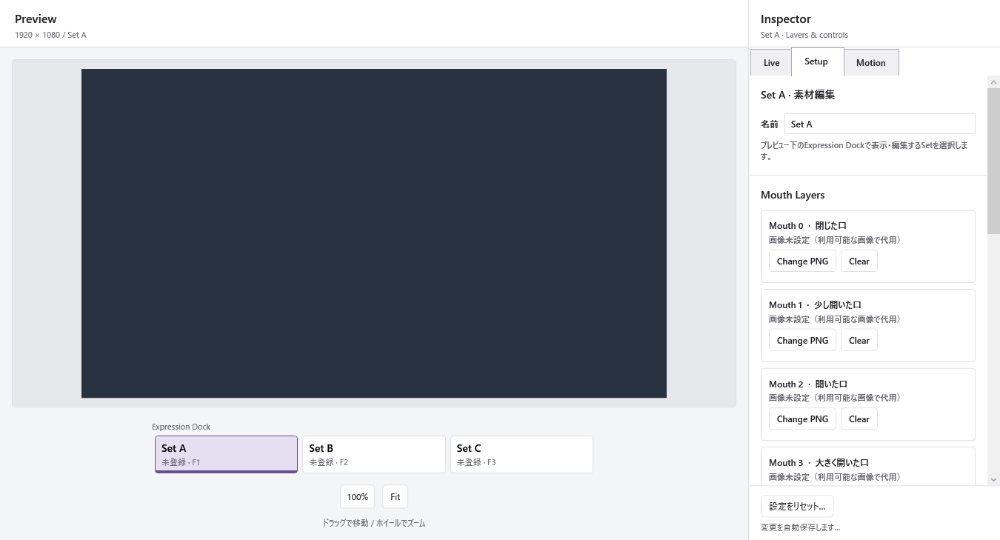

探索テストで発見
「リセットしたのに、構図がずれる」
実機での探索テストで、UXとして不自然な動きに気づきました。
- 設定をリセットすると、立ち絵が画像を入れた直後とは違う大きさ・位置に戻っていた
- 「リセット＝入れた直後の見た目に戻る」が自然だと判断し、Fitと同じ結果になるよう修正を依頼
- 4000×8000pxの画像で、修正後に倍率・位置がFitと一致することを確認
QA / Product Builder
アジャイル開発チームでQA（テスト設計の補佐）を経験。いまは自分が最初のユーザーになるWindowsアプリを個人で開発しています。 実装はAIが行い、何を作るか・出してよいかは自分が判断します。

実際の画面（立ち絵のデモは準備中）高解像度PNGの立ち絵に、口パク・まばたき・呼吸・表情切り替えを付けてOBS配信に使えるWindows向けPNGTuberアプリ。 手持ちの画像を上から順に入れるだけで完成する、初心者が迷わない設定を目指しています。
自動テストが全部通っても、それだけではマージしません。実機で確かめ、記録に残し、範囲を決めます。
探索テストで発見
実機での探索テストで、UXとして不自然な動きに気づきました。
仕様判断 → 実機確認 → スコープ
表情セットの名前変更で、絵文字を「許容する」方針を自分で決めました。
手順書もテスト対象
使う人が読む手順書も、実機で確かめて直します。
映像演出（VJ）用のアプリを計画中です。公開できる段階になったら、ここに追加します。
Yusuke Kimura。アジャイル開発チームで、QAとしてテスト設計の補佐を担当していました。 そこで身につけた「使う人が迷わないか」「直したことで他が壊れていないか」を確かめる視点を、いまは個人のプロダクト作りに活かしています。
過去は変えられないし、他者は変えられない。
でも、人生の主導権は手放さない。